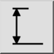

Вертикальный
Панель инструментов / значок:


Меню: Размер > Вертикальный
Ярлык: D, V
Команды: dimver | dimvertical | dv
Панель инструментов / значок:


Этот инструмент предоставлен для удобства и по существу работает так же, как инструмент повёрнутых размеров. Единственное отличие в том, что угол зафиксирован на 90 градусов (вертикально).